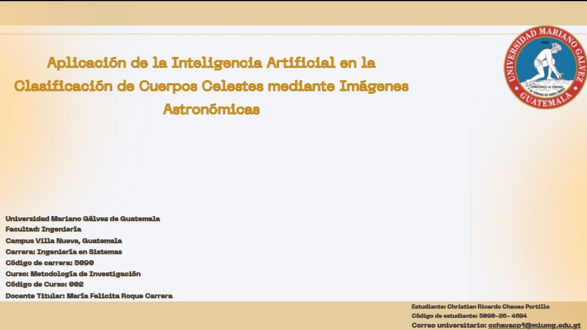
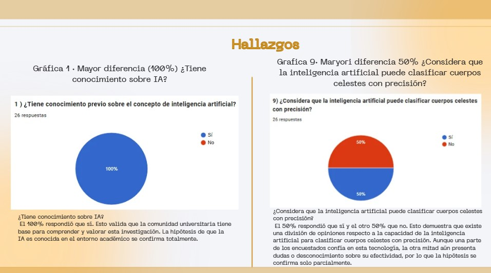
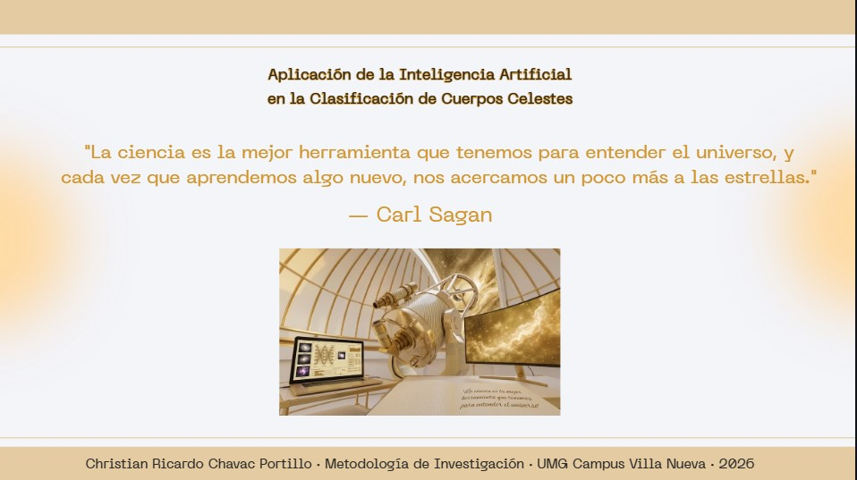

Uso de la Inteligencia Artificial en la Clasificación de los Cuerpos Celestes
El curso de Metodología de la Investigación permitió conocer la forma correcta de elaborar un trabajo académico con estructura formal. A través de esta asignatura se aprendió a plantear un problema, justificar un tema, formular objetivos, organizar información y presentar resultados de forma clara.
Esta materia fue importante porque ayudó a comprender que una investigación no se basa solamente en buscar información, sino en analizarla, ordenarla y relacionarla con un propósito específico. También permitió fortalecer la redacción académica y el uso de fuentes confiables.
El proyecto desarrollado fue una investigación individual titulada "Uso de la Inteligencia Artificial en la Clasificación de los Cuerpos Celestes". El tema se enfocó en analizar cómo la inteligencia artificial puede apoyar el estudio del universo mediante la clasificación de objetos astronómicos.
La investigación partió de una necesidad real: los telescopios y observatorios modernos generan grandes cantidades de datos, imágenes e información astronómica. Debido a ese volumen, el análisis manual puede ser lento y limitado. Por esta razón, la inteligencia artificial representa una herramienta útil para procesar información de manera más rápida y eficiente.
El proyecto fue elaborado con una estructura formal de investigación. Incluyó planteamiento del problema, justificación, objetivo general, objetivos específicos, marco conceptual, marco teórico, marco metodológico y marco operativo.
En el marco conceptual se explicaron términos importantes relacionados con inteligencia artificial, cuerpos celestes, astronomía, clasificación astronómica y procesamiento de imágenes. Esta parte permitió establecer las bases del tema.
En el marco teórico se desarrollaron antecedentes y explicaciones más amplias sobre la evolución de la inteligencia artificial, su aplicación en diferentes áreas y su importancia dentro del campo científico y tecnológico.
En el marco metodológico se explicó la forma en que se realizó la investigación, el enfoque utilizado y los instrumentos aplicados. Finalmente, en el marco operativo se organizaron los resultados, gráficas, análisis, conclusiones y recomendaciones.
El objetivo principal fue investigar cómo la inteligencia artificial puede utilizarse en la clasificación de cuerpos celestes y comprender su importancia dentro del área astronómica y tecnológica.
También se buscó demostrar que la inteligencia artificial no solo es útil en áreas comerciales o industriales, sino también en el análisis científico, especialmente cuando se trabaja con grandes cantidades de datos.
Para realizar el proyecto primero se eligió el tema de investigación y se definió el problema central. Luego se redactó la justificación, explicando por qué era importante estudiar la aplicación de la inteligencia artificial en la astronomía.
Después se construyeron los objetivos y se investigaron fuentes relacionadas con el tema. La información fue organizada en diferentes marcos para mantener una estructura clara y profesional.
Como parte final, se trabajaron resultados, gráficas, conclusiones y recomendaciones. También se elaboró una presentación en Canva para exponer la investigación de forma más visual y comprensible.
Este proyecto permitió fortalecer habilidades relacionadas con la investigación, el análisis de información y la redacción académica. También ayudó a mejorar la capacidad para buscar fuentes confiables, interpretar datos y organizar documentos extensos.
Otro aprendizaje importante fue la interpretación de resultados mediante gráficas. Esto permitió analizar la información recolectada y relacionarla con la hipótesis y los objetivos del trabajo.
Además, se fortalecieron habilidades de comunicación oral gracias a la creación de una presentación en Canva, donde fue necesario resumir el contenido de la investigación y explicarlo de manera clara.
Durante este proyecto se desarrollaron habilidades como investigación académica, redacción formal, análisis de resultados, interpretación de gráficas, organización de capítulos, formulación de conclusiones y presentación de información.
Estas habilidades son importantes dentro de la carrera porque permiten analizar problemas, investigar soluciones y comunicar resultados de forma ordenada y profesional.
Las siguientes imágenes muestran evidencias del trabajo realizado, incluyendo partes de la investigación, presentación y organización del contenido.



En el siguiente video se explica el tema de investigación, la estructura del proyecto y la importancia de la inteligencia artificial en la clasificación de cuerpos celestes.
El proyecto de Metodología de la Investigación permitió comprender la importancia de investigar de forma ordenada y profesional. A través del tema seleccionado se relacionó la inteligencia artificial con la astronomía, mostrando cómo la tecnología puede apoyar el análisis de grandes cantidades de información.
Esta experiencia fortaleció la redacción académica, la organización de ideas y la capacidad de explicar un tema complejo de manera clara. También permitió reconocer que la investigación es una herramienta fundamental para comprender mejor los avances tecnológicos.